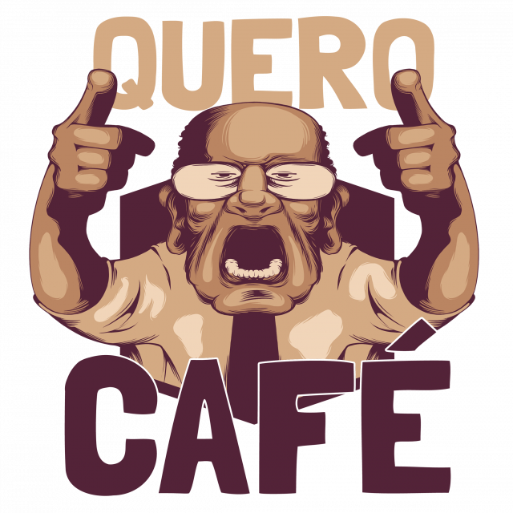
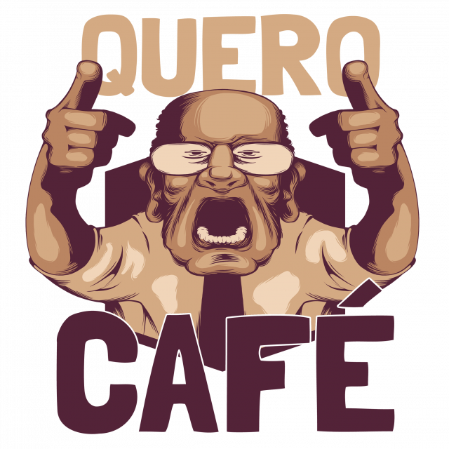
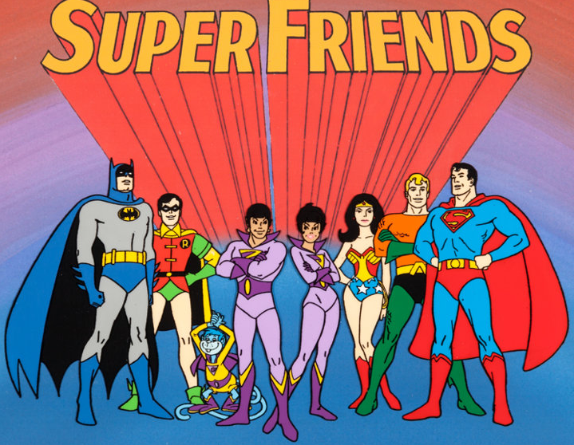

Minha miguxa do curso desde o processo seletivo s2
 
Marina Catão
Minha miguxa do curso desde o processo seletivo s2
Matheus Tostes
O cara é gente boa ! Mas como diz o Paulo Ricardo: botzão da Trybe ! HAHA
Paulo Ricardo
O cantor da abertura do BBB está entre nós !
Marina Rios
Até queria a Mariana Rios na turma... Mas pensando bem, quem é Mariana Rios perto da Marina
Rios ?! UHAUHA
Harumi
Uma deusa, uma
louca, uma feiticeira do Kahoot. A menina dos 0.1ms e 500hz !
Marcos Ridley
O Mister WikiHow da
trybe !
Guilherme Leonel
O cara é meu fã ! A única pessoa do mundo que me acha um galã de novela deveria estar aqui.
obs.: Nem minha mãe acha. kkkkkk
TURMA 21

Não importa se são
do lado A ou B, vocês são super amigos !
Vamos seguir nessa caminhada juntos até o fim. ❤ !
Ainda
não deu tempo de conhecer vocês todos, mas como a gente dizia na época dos depoimentos do orkut, já considero
pakas !